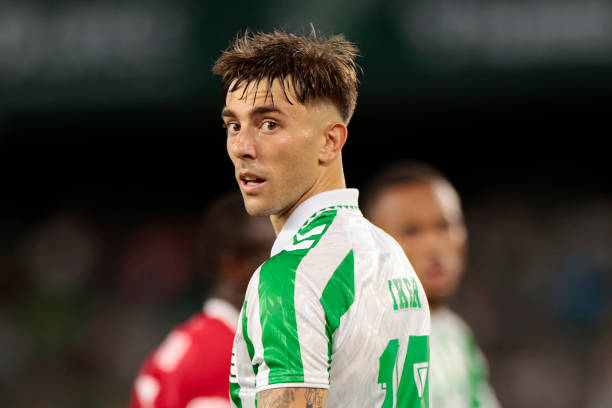
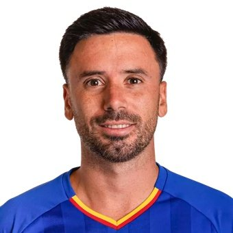

Toda la actualidad del mercado azulón, movimientos, negociaciones y posibles incorporaciones.

Actualizado · Agosto 2026 · Redacción Azulones News
El Getafe sigue atento a la situación de Iker Losada, centrocampista del Real Betis que no entra en los planes del conjunto verdiblanco para esta temporada. El futbolista busca una salida que le permita disfrutar de minutos y continuidad en Primera División.
El conjunto azulón es uno de los clubes que ha mostrado interés por el jugador. Su perfil ofensivo y su capacidad para actuar como mediapunta encajan con las necesidades de la plantilla de José Bordalás.
Las conversaciones todavía no han desembocado en un acuerdo y el Getafe deberá valorar las condiciones económicas de una posible operación antes de realizar un movimiento definitivo.
Leer noticia completa →El Getafe continúa valorando diferentes opciones para reforzar la defensa. Matías Viña aparece como uno de los perfiles que podrían entrar en el radar azulón para reforzar el lateral izquierdo.
La operación dependería de las condiciones económicas y de la disponibilidad del futbolista.
Actualizado · Agosto 2026
El futuro de Javi Muñoz continúa pendiente de resolución. El centrocampista aparece entre los jugadores cuyo futuro podría cambiar antes del cierre del mercado.
El Getafe deberá valorar cualquier propuesta que llegue por el futbolista mientras continúa trabajando en la configuración definitiva de la plantilla.
Actualizado · Agosto 2026Con el mercado todavía abierto, la dirección deportiva azulona continúa analizando diferentes oportunidades para completar la plantilla.
La prioridad pasa ahora por encontrar perfiles que puedan aportar profundidad y competencia en las diferentes posiciones del equipo.
Actualizado · Agosto 2026El regreso de Enes Ünal al Getafe ya es una realidad. El delantero turco vuelve al Coliseum después de su etapa en el Bournemouth y se ha convertido en una de las grandes incorporaciones del proyecto de José Bordalás.
El futbolista fue presentado junto a Johan Mojica y Francho Serrano y ya forma parte de la nueva plantilla azulona.
Confirmado · Agosto 2026El Getafe ha protagonizado un mercado de fichajes muy activo durante las últimas semanas. La dirección deportiva ha incorporado numerosos jugadores para construir una plantilla más competitiva y preparada para afrontar una temporada con presencia europea.
Entre las operaciones más importantes destaca la llegada de Orel Mangala, que aterrizó en el Coliseum procedente del Olympique de Lyon. El centrocampista aporta físico, recuperación y experiencia al centro del campo azulón.
El ataque también ha recibido un importante impulso con el regreso de Enes Ünal, mientras que Johan Mojica y Francho Serrano han sido otras de las incorporaciones presentadas recientemente.
A pesar de todos estos movimientos, el mercado continúa abierto y el Getafe sigue atento a oportunidades. Iker Losada es uno de los nombres que continúa generando interés, mientras que también se estudian diferentes alternativas para reforzar otras posiciones.
El objetivo de la dirección deportiva es cerrar el mercado con una plantilla equilibrada que permita competir en LaLiga y en Europa bajo las órdenes de José Bordalás.
📰 Rumores activos: 3
🤝 Negociaciones abiertas: 1
👀 Jugadores seguidos: 3
🚪 Posibles salidas: 1